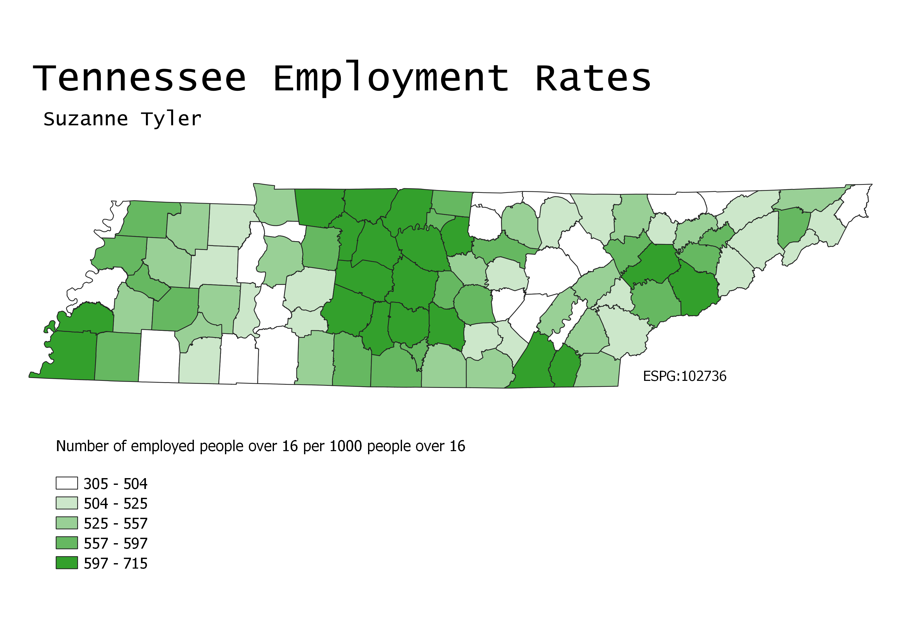
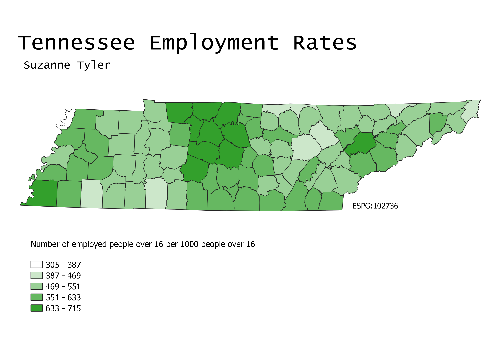
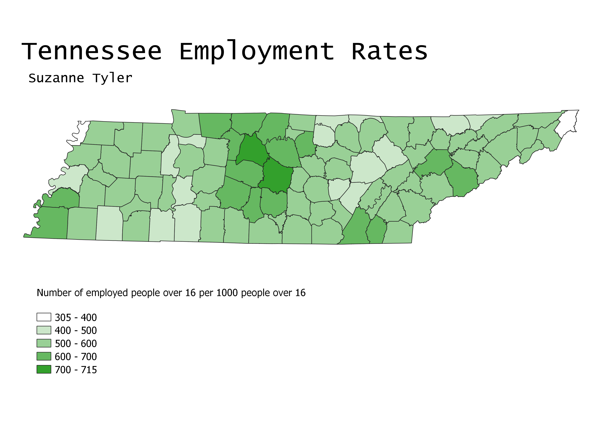

Tennessee Educational Attainment Choropleths
Suzanne Tyler // GEOG 370-006 // Homework 6 Part 2 // February 25, 2022
Ratio Used/>
To normalize this data, I took the ratio of people over 16 in each county in Tennessee that are employed and divided this number by the total number of people over 16 in that county. This gives a percentage, which I multiplied by 1000 to get the number per 1000 of people over 16 that are employed.
Map 1
This map was made using equal count data categorization. This means that the input values were equally distributed between each output color on the map. The nice thing about this kind of data categorization is that the map shows an even color distribution. However, this could mean that data is misrepresented. A high number of a specific value would not be clear to see on this map because the categories each have an equal number of values.

Map 2
This map was made using equal interval categorization. Equal interval categorization is used for looking at the distribution of values across the interval. It's easy to see based on the prevalence of one color on the map how common a specific range of data is. The downside of this is that if the data is extremely concentrated, the map might be completely dominated by one color and not provide much useful information at all.

Map 3
For the final map I chose to use pretty breaks to categorize the data. The biggest reason for using pretty breaks is because they are, quite literally, nice to look at. The categories are split at convenient numbers, in this case every 100 people. The main drawback of pretty breaks is that the data often doesn't work out in such a way that the map is helpful or useful. It is often better to choose a categorization based on what best represents the data in a way that is easy to pick up on when looking at the map.
